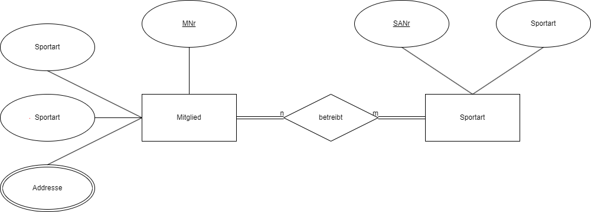
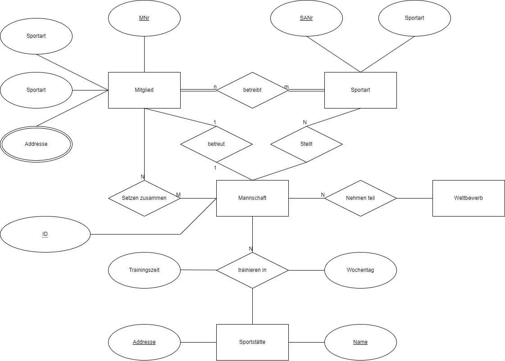
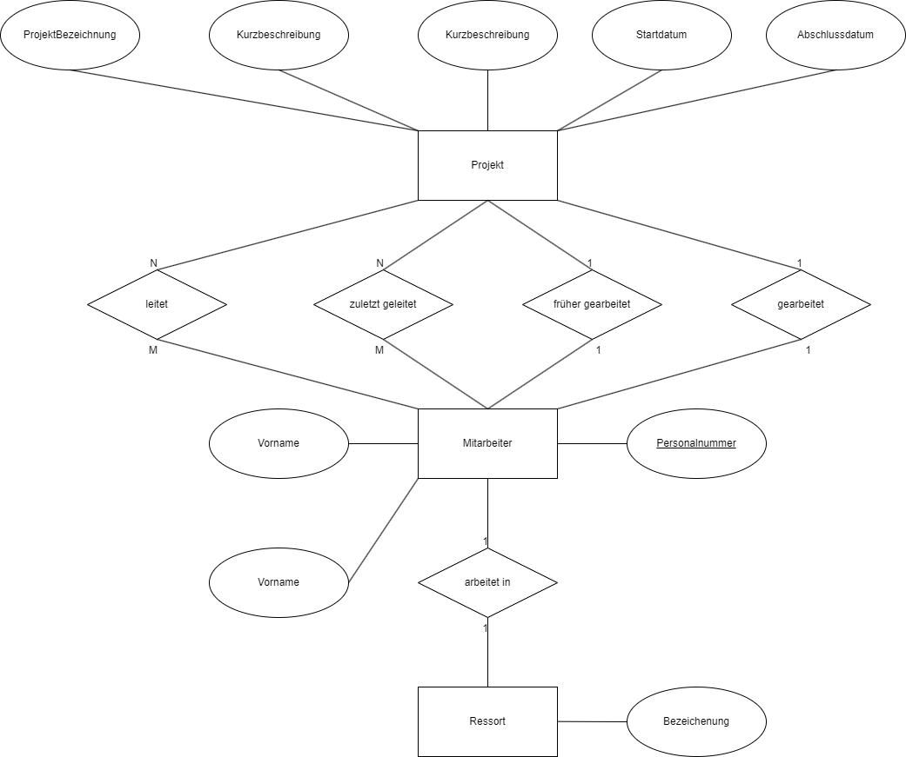
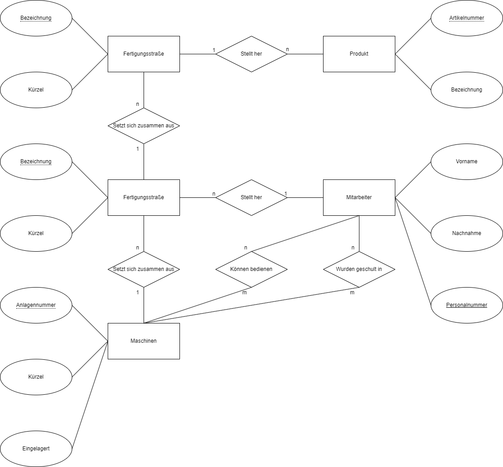
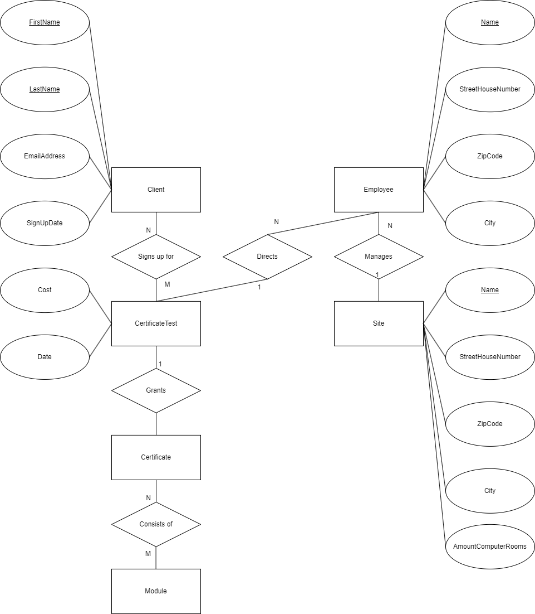
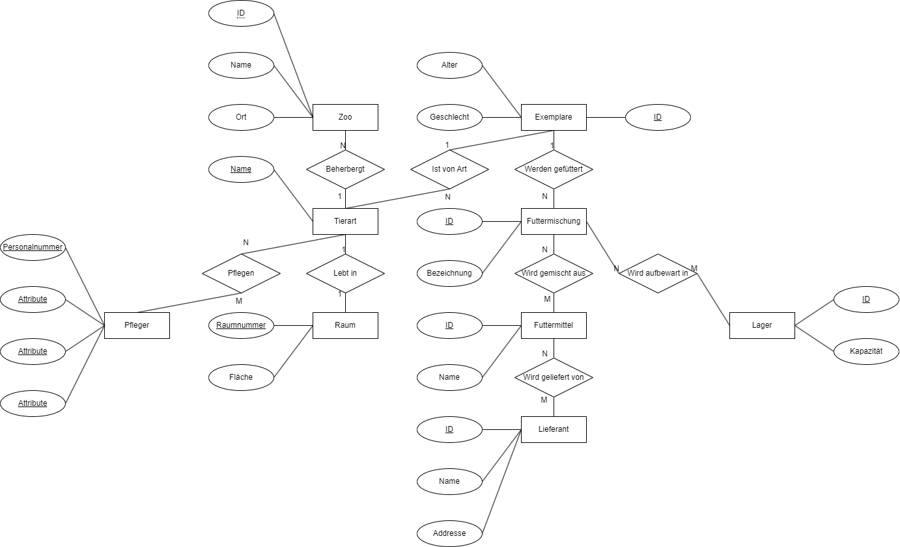

Grundlagen Datenbanken
6)

-
Bei den Rechtecken handelt es sich um Entities, welche man sich als
Klassen vorstellen kann
-
Entities können mehrere Attribute haben. Diese werden als Ellipsen im
Diagramm repräsentiert. Diese kann man sich auch als Attribute von
Klassen vorstellen.
-
Die Raute ist ein Relationship. Dieses beschreibt wie verschiedene
Entities miteinander interagieren
-
Die Linien zeigen lediglich die Zugehörigkeit von Attributen zu
Entities auf. Zusätzlich können Nummern oder unbestimmte Variablen an
diese Linien geschrieben werden um die maximale Anzahl von Entities
und Attributen, mit der ein Entity assoziieren darf.
-
Die unterstrichenen Attribute bezeichnen ein Key Attribut, mit dehnen
die Entities gefunden werden können
-
Die doppelte Ellipse bedeutet, dass die Entity mehrere Attribute
dieser Art besitzen darf.

8)
-
1)
-
Gleiche Namen
-
Aufträge können nicht eindeutig einem Kunden zugewiesen werden
(wen soll man abrechnen?)
- Mehrere Rechnungsaddressen
-
In der Kundendatei Tabelle kann nicht zwischen gleichnahmigen
Personen unterschieden werden (Entfernen und Ändern)
-
Der Name eines Kunden kann nicht in Kundendatei Tabelle geändert
werden, da dieser als Identifikationsnummer benutzt wird
-
2)
- ID auch für Kunden einführen
8)

10)

11)

12)
